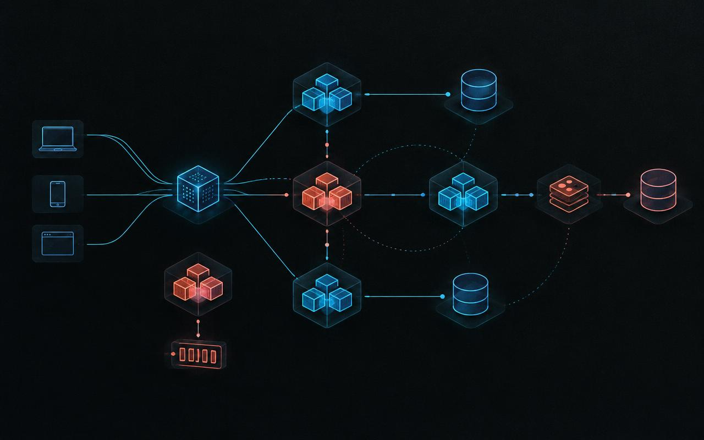

01Cloud architecture
Users · Products · Orders
eCommerce Microservices
A production-minded commerce platform built as independent services, with automated delivery to Kubernetes and secure secret management.
ASP.NET CoreDockerAKSRabbitMQRedis
